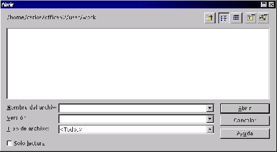
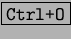

Next: Introducción de datos.
Up: Primeros Pasos
Previous: Creación de nuevas hojas
Índice General
Para recuperar un trabajo desde el lugar donde esté almacenado acudiremos
al menú [Archivo] y [Abrir] con lo que aparecerá el cuadro de
opciones para recuperar el archivo, como se aprecia en la figura
5.32.
Figura 5.32:
Recuperar archivo
|

|
Se puede acceder al cuadro de diálogo de abrir archivo presionando
.
Proyecto Cursos - LuCAS - http://lucas.hispalinux.es/htmls/cursos.html